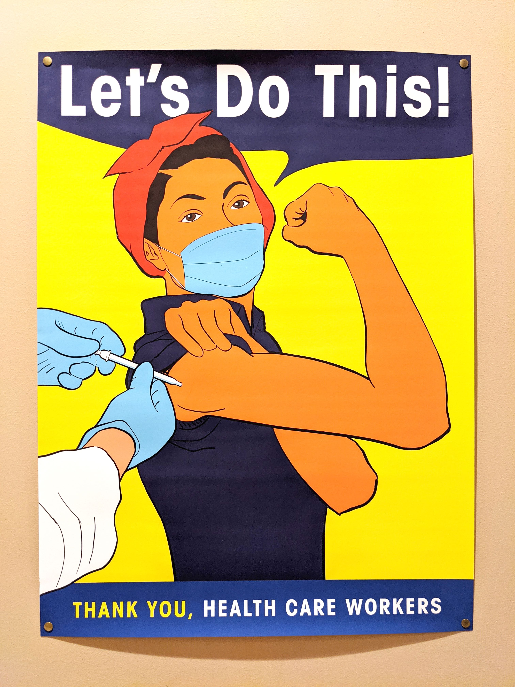
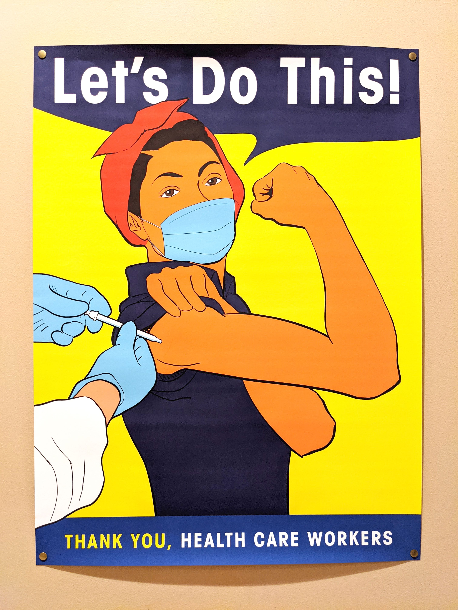

VICKY THE VACCINATOR
Illustration
A group of doctors and volunteers asked me to volunteer my services for a vaccination effort in San Francisco. One of the doctors had graciously donated 40,000 doses of the COVID-19 vaccine to the uninsured in Tier 1B: teachers, food workers, and emergency services.
The donors wanted a poster to brighten up the room and soothe the nerves of the patients, and pins to help separate volunteers from visitors. The resulting imagery pulls on Rosie the Riveter’s legacy; Vicky the Vaccinator, as we call her, galvanizes us to a common sense of purpose, to end this pandemic.
 
